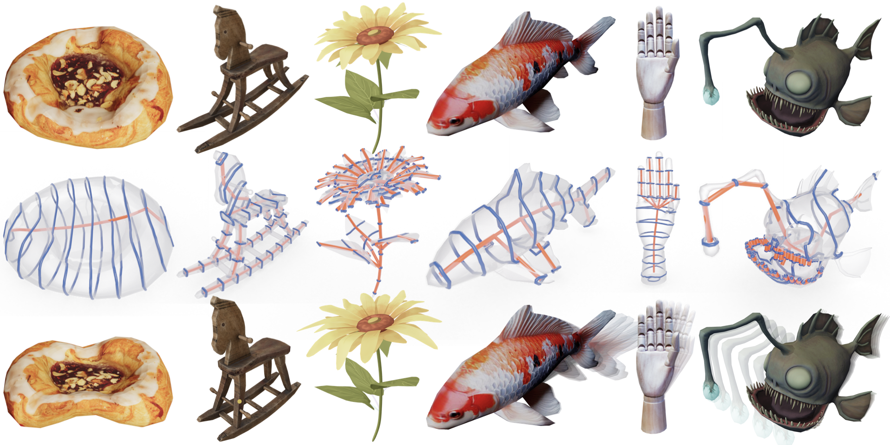
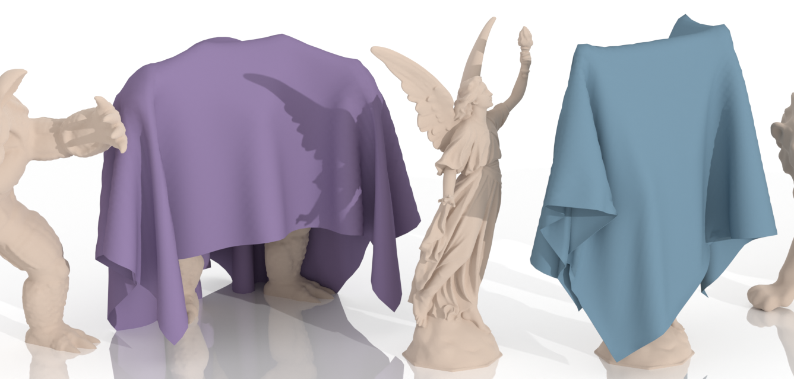
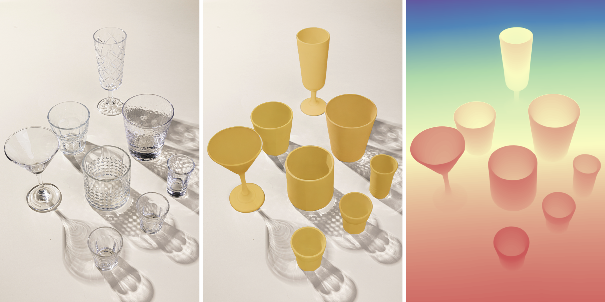
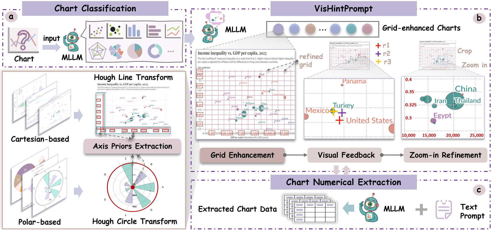
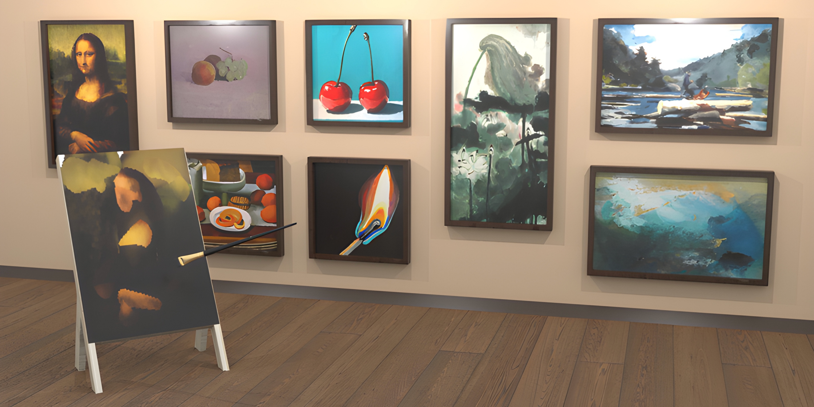
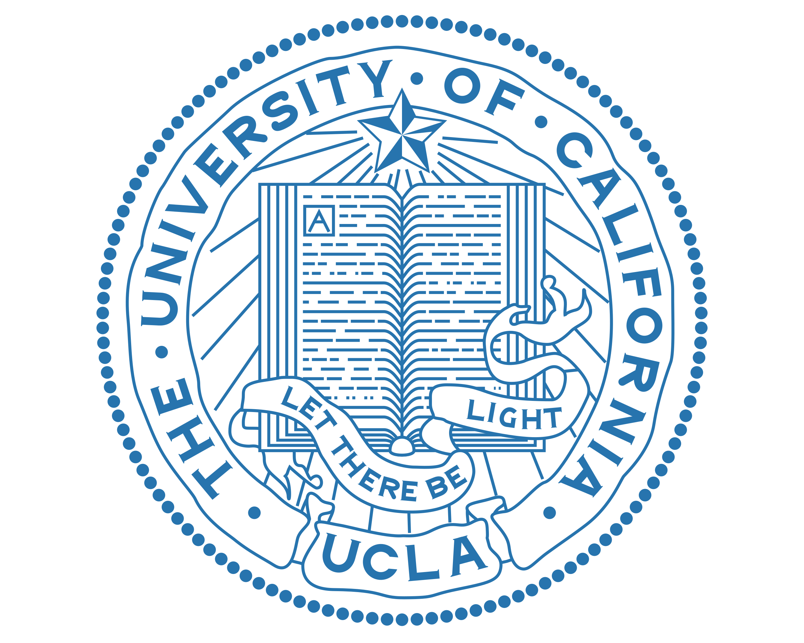
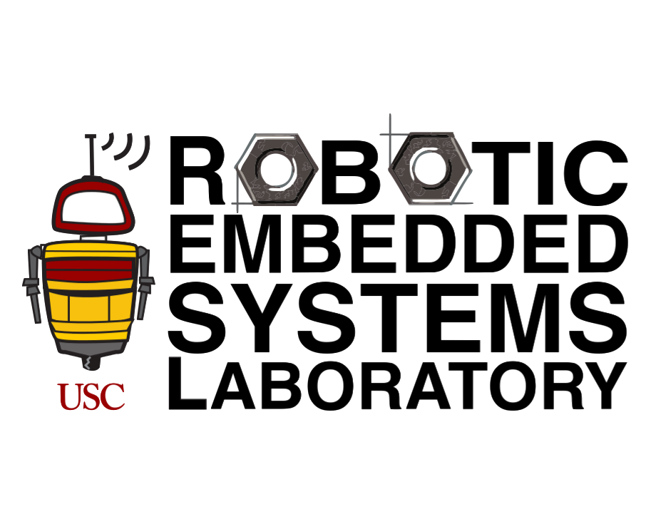
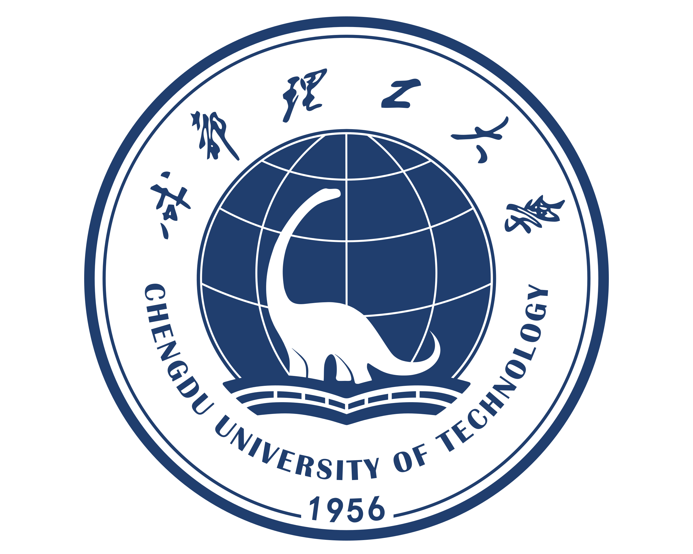

Yumeng He 何雨濛
PhD StudentUniversity of California, Los Angeles
heyumeng0928@gmail.com
Handshake
Github
Google Scholar
Resume
Last Updated: Jul 1, 2026
Total number of visitsAbout Me
I am a 1st year PhD student at the UCLA AIVC Lab, supervised by Prof. Chenfanfu Jiang. Previously, I obtained my Master's degree in Computer Science from the University of Southern California, supervised by Prof. Jernej Barbič, and my Honours Bachelor of Science degree with High Distinction from the University of Toronto, where I double-majored in Mathematics and Computer Science.
Research Interests
My research interests are computer vision, graphics, and robotics, with a focus on physical AI, object/scene generation, articulated and kinematic asset modeling, physics-based simulation, real-to-sim pipelines, and policy learning.
I am always open to collaboration and summer internship opportunities, feel free to drop me an email if you are interested in my research.
News
- Jun 2026: Our paper SeeClear is accepted by ECCV 2026!
- Jun 2026: Our paper SPARK wins the CVPR Compute Transparency Champion!
- Apr 2026: Our paper SPARK is accepted by CVPR 2026 as an oral presentation!
- Mar 2026: Our paper Birth of a Painting is conditionally accepted to ACM TOG (SIGGRAPH)!
- Mar 2026: I am admitted to the UCLA PhD program!
Publications & Manuscripts

arXiv, 2026
[arXiv]

Master's Thesis, 2026
[Paper]

European Conference on Computer Vision (ECCV), 2026
[Project Page] [arXiv]

2025

Computer Vision and Pattern Recognition (CVPR), 2026 Oral (top 3.45%)
[Project Page] [arXiv] [Code]

arXiv, 2025
[Project Page] [arXiv]

Conditionally Accepted by ACM Transactions On Graphics (SIGGRAPH), 2026
[Project Page] [arXiv]
Research Experience

Jun 2025 - Jun 2026
Supervisor: Prof. Chenfanfu Jiang, Dr. Ying Jiang
Currently conducting full-time research at UCLA’s AIVC Lab on 3D articulated object generation, exploring neural and physics-guided representations for shape, joint dynamics, and scene layout—toward a first-author CVPR 2026 submission.

Jul 2025 - Dec 2025
Supervisor: Prof. Gaurav S. Sukhatme, Dr. Jeremy Morgan
Ledding the Real2Sim pipeline for a robotic manipulation project, focusing on building a digital twin from a single RGB-D image of a cluttered tabletop scene—including object segmentation, mesh generation, and estimation of pose, scale, and placement—and importing the reconstructed scene into ManiSkill3 for simulation.

May 2023 - Aug 2023
Supervisor: Prof. Guangzhu Chen
Faced with unlabeled industrial defects on MVTec AD and tasked to raise unsupervised detection/localization accuracy, proposed SS-DualFlow: a dual-layer 2D normalizing-flow that maps features to a Gaussian base to curb information loss and inserts an Exponential Space Attention module to focus on anomaly-salient regions.
Work Experience
Aug 2022 - Aug 2023
In a DevOps-focused internship, I streamlined build and deployment using Jenkins, built Docker images for both xLinux and pLinux, integrated SonarQube to resolve critical issues, and automated weekly log cleanups which significantly reduced human error and accelerated release cycles.
Service & Activities
- Reviewer, SIGGRAPH Asia 2026 Technical Papers
- Special Session Organizer, ACM SIGCSE Technical Symposium 2026 [Website]
USC Courses
- USC CSCI699 Robotic Perception, Fall 2025 [Notes]
- USC CSCI566 Deep Learning and Its Applications, Fall 2025 [Project Proposal] [Mid Report] [Final Report] [Poster]
- USC CSCI580 3D Graphics and Rendering, Spring 2025 [Report] [Presentation Slides]
- USC CSCI520 Computer Animation and Simulation, Spring 2025 [Notes] [A1] [A2] [A3]
- USC CSCI420 Computer Graphics, Fall 2024 [A1] [A2] [A3]
- USC CSCI570 Analysis of Algorithms, Fall 2024
Fun Facts
- I have worked on various course projects and personal projects in computer graphics, simulation, and other areas. Here is a collection of my projects.
- I enjoy creating high-quality teaser renders and have assisted other peers with paper teasers. Here is a selection of my renders.
- In addition to my academic pursuits, I'm also a tattoo artist. Check out my work on Instagram at @rainy.tattoo.
- I built this webpage entirely from scratch without any templates; it's a simple static site, but a great way to practice HTML and CSS.